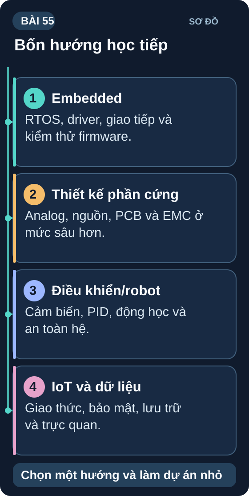
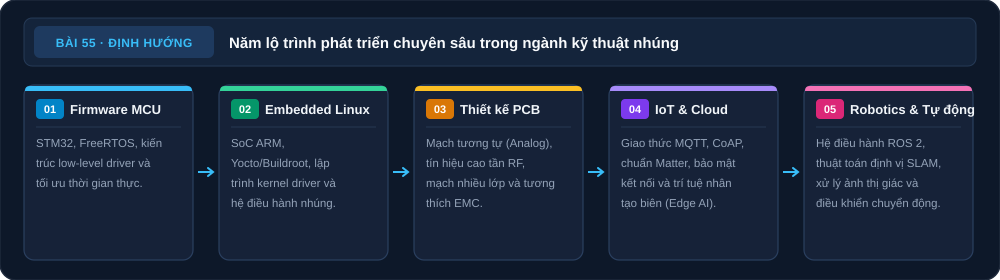

Con Đường Tiếp Theo — Học Gì Sau Khóa Này?
Bạn đã có nền tảng vững chắc. Bây giờ là lúc chọn hướng chuyên sâu — từ STM32 bare-metal đến Embedded Linux, từ robot đến IoT công nghiệp.
⏱ Nghiên cứu lộ trình: 90 phút🎯 Đầu ra: Kế hoạch 3–6 tháng tiếp theo

Sơ đồ tổng quan Bài 55
Các nhóm hướng học tiếp. Chọn một hướng và làm dự án nhỏ.
Nguồn: tự vẽ cho giáo trình; nội dung đối chiếu với bài học.
1. Bản đồ các hướng chuyên sâu
| Hướng | Các chủ đề có thể học tiếp |
|---|---|
| A. Firmware | STM32 và lập trình bare-metal/HAL/LL → RTOS như FreeRTOS hoặc Zephyr → quy trình phát triển hệ thống yêu cầu an toàn chức năng. |
| B. Embedded Linux | Raspberry Pi hoặc board Linux → Buildroot/Yocto → driver và nhân Linux → kiến trúc khác như RISC-V. |
| C. PCB và phần cứng | KiCad chuyên sâu → công cụ CAD khác → mạch mixed-signal/RF → thiết kế tín hiệu tốc độ cao. |
| D. IoT và cloud | Nền tảng IoT → MQTT/CoAP/Matter khi phù hợp → xử lý ở biên và TinyML. |
| E. Robotics | ROS 2 → thị giác máy tính → lập kế hoạch đường đi và định vị/lập bản đồ. |
2. Lộ trình học cụ thể theo hướng
| Hướng | Tháng 1–3 | Tháng 4–6 | Dự án demo |
|---|---|---|---|
| A: STM32 | STM32CubeIDE, GPIO/UART/SPI/I2C HAL, NUCLEO board | FreeRTOS trên STM32, DMA, ADC calibration | Motor controller với encoder feedback |
| B: Linux | Linux command line, bash script, cross-compile C trên RPi | Custom Buildroot image, viết kernel module đơn giản | Custom IoT gateway với OTA update |
| C: PCB | Altium Designer cơ bản, design rule advanced, 4-layer PCB | RF layout, impedance controlled, EMI simulation | Custom ESP32 module với PCB antenna |
| D: Edge AI | TensorFlow Lite, Edge Impulse, model quantization | Deploy ML model ESP32, Arduino Nano 33 BLE Sense | Keyword detection hoặc gesture recognition |
| E: Robotics | ROS2 installation, nodes/topics, turtlebot simulation | SLAM với lidar, Nav2 stack, robot arm control | Autonomous mobile robot với obstacle avoidance |
3. Tài nguyên học tiếp — Miễn phí
| Tài nguyên | Nội dung | Link |
|---|---|---|
| STM32 từ đầu | Deepbluembedded.com — tutorial đầy đủ HAL + LL | deepbluembedded.com |
| Embedded Linux | bootlin.com/training — slides miễn phí, chất lượng cao | bootlin.com/training/materials |
| FreeRTOS | FreeRTOS.org — documentation chính thức + examples | freertos.org |
| Edge AI | Edge Impulse Studio — deploy ML không cần viết code từ đầu | edgeimpulse.com |
| ROS2 | The Construct — ROS2 free courses | youtube.com/c/TheConstruct |
| PCB Design | Contextual Electronics — PCB design series | youtube.com/c/ContextualElectronics |
4. Kỹ năng mềm — Song song kỹ thuật
Kỹ năng tạo ra kỹ sư xuất sắc
- Git & Version Control: Branch, PR, revert — thiết yếu khi làm team
- Đọc Datasheet: Skill đọc hiểu datasheet IC 500 trang trong 30 phút
- Technical Writing: Viết doc rõ ràng — giá trị cao hơn code đẹp
- Debugging Mindset: "Giả thuyết → kiểm chứng" — không đoán mù
- Open Source Contribution: Contribute 1 PR nhỏ lên dự án mình dùng
- Community: Discord điện tử, forum AVR Freaks, StackOverflow EE
✅ Bài 55 — Lập kế hoạch
Sơ đồ tổng hợp Bài 55

Năm hướng học tiếp
Chọn hướng và dự án nhỏ. Các nhánh bên dưới dẫn tới nội dung đã học trong bài.
Nguồn: tự vẽ cho giáo trình; đối chiếu theo các mục của bài.
Đọc nội dung sơ đồ bằng chữ
- Firmware: STM32, RTOS và driver. (mục Bản đồ các hướng chuyên sâu).
- Embedded Linux: Buildroot và kernel module. (mục Bản đồ các hướng chuyên sâu).
- PCB phần cứng: Analog, RF và board nhiều lớp. (mục Bản đồ các hướng chuyên sâu).
- IoT và cloud: MQTT, Matter và edge AI. (mục Bản đồ các hướng chuyên sâu).
- Robotics: ROS2, thị giác và SLAM. (mục Bản đồ các hướng chuyên sâu).